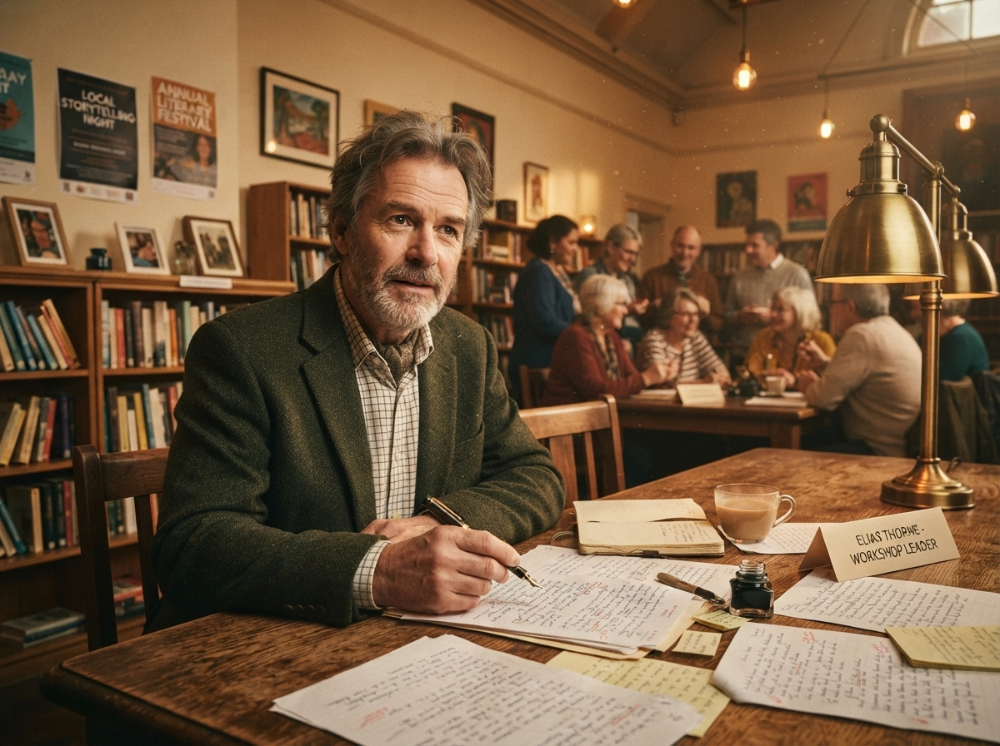
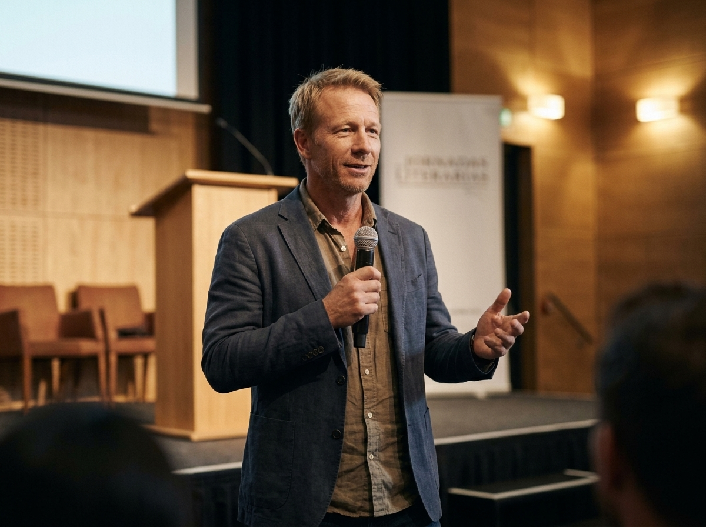

Ponente Uno
Escritora y ensayista invitada a inaugurar las charlas literarias de esta edición.
Escritora y ensayista invitada a inaugurar las charlas literarias de esta edición.
Autor de novela contemporánea centrado en la construcción de personajes y atmósfera.

Coordinador de talleres de relato breve y jurado del certamen literario.
Periodista cultural y editora independiente especializada en crónica y ensayo.
Poeta y docente centrado en la lectura en voz alta y la creación colectiva.

Editor y crítico literario invitado a la mesa de clausura de las jornadas.